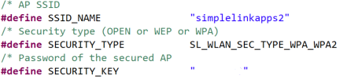
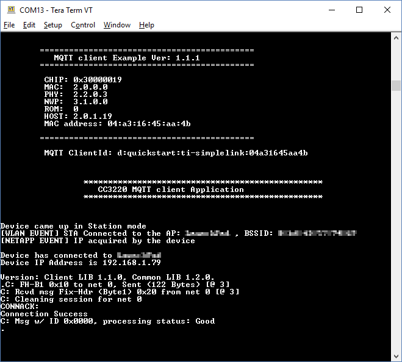
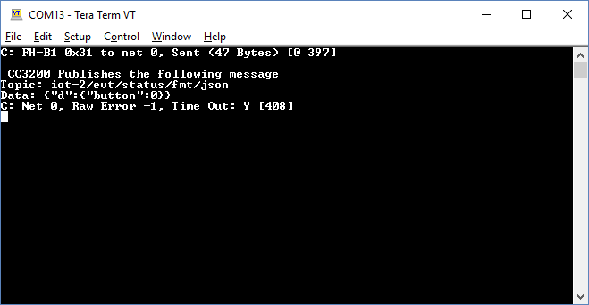
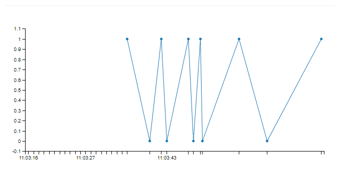

Introduction
This workshop shows how to connect the SimpleLink™ Wi-Fi® CC3220SF LaunchPad™ directly to the Watson IoT Platform, send data to the cloud, and how to push data to the Quickstart service for easy web browser display.
IBM Watson IoT Platform is a fully managed, cloud-hosted service that makes it simple to build and deploy apps for IoT devices, sensors and gateways. It provides solutions for device registration, connectivity, control, rapid visualization and storage of data derived from the IoT. When combined with the IBM Bluemix® environment and access to secure Watson APIs, the platform allows you to integrate and analyze predictive, cognitive, and contextual analytics for stronger decision-making.
Prerequisites
Recommended Reading
Software
- Code Composer Studio v7.4 or later OR CCS Cloud dev.ti.com/ide
- Must have SimpleLink CC3xxx Wireless MCU support installed
- Make sure that CCS is using the latest updates: Help → Check for Updates
- CC3220 SDK v1.60.00.04 or later
- Uniflash v4.2.1.15 or later.
- Terminal emulator program such as TeraTerm or PuTTY (115200/8/N/1)
Hardware
- CC3220S or CC3220SF LaunchPad™ (CC3220S-LAUNCHXL or CC3220SF-LAUNCHXL)
- 1x Micro-USB cable (included with LaunchPad/BoosterPack)
- 802.11b/g/n (2.4-GHz) Wireless Access Point (AP)
Task 1: Setup
Complete the MQTT Client demo from the Wi-Fi MQTT SimpleLink Acadamy training
- This training goes over the basics of MQTT using a generic example.
- The rest of this IBM MQTT training will use the foundations of the Wi-Fi MQTT module
General Settings
- Import the mqtt_client example from resource explorer for your platform
mqtt_client_CC3220SF_LAUNCHXL_tirtos_ccs - Make sure the local access-point parameters (
SSID_NAME,SECURITY_TYPEandSECURITY_KEY) defined innetwork_if.hare configured according to your local access-point. Note: useSL_WLAN_SEC_TYPE_WPA_WPA2forSECURITY_TYPEif you have a WPA/WPA2 AP.
- Import the mqtt_client example from resource explorer for your platform
Task 2: Configure/modify MQTT Client example
MQTT Settings
Settings for the demo can be found in the macros at the beginning of themqtt_client_app.csource file. We need to modify the following:- Modify
SERVER_ADDRESSto point to the IBM Quickstart Broker#define SERVER_ADDRESS "quickstart.messaging.internetofthings.ibmcloud.com"mqtt_client_app.c :: LOCAL DEFINES
- Modify the MQTT Topic and Data variable. Our
PUBLISH_TOPIC0_DATAwill be a variable, so we need to remove the define and set up a variable we can write to./* Defining Publish Topic Values */ #define PUBLISH_TOPIC0 "iot-2/evt/status/fmt/json" //#define PUBLISH_TOPIC0_DATA "Push Button SW2 has been pressed on CC32XX device"mqtt_client_app.c :: LOCAL DEFINES
const char *publish_topic = { PUBLISH_TOPIC0 }; const char *publish_data[1024];mqtt_client_app.c :: GLOBAL VARIABLES
Modify the
WILLmessage.#define WILL_TOPIC "iot-2/evt/status/fmt/json" #define WILL_MSG "{\"d\":{\"state\":\"LastWillAndTestament\"}}" #define WILL_QOS MQTT_QOS_0 #define WILL_RETAIN falsemqtt_client_app.c :: LOCAL DEFINES
- Modify
Remove Topic Subscription
Remove the code for topic subscription (since QuickStart service is publish only and doesn’t allow subscriptions). We are going to comment out this section to make it easy to add back in.
/* Subscribe to topics when session is not stored by the server */ /* if ( (gUiConnFlag == 1) && (0 == lRetVal) ) { uint8_t subIndex; MQTTClient_SubscribeParams_t subscriptionInfo[SUBSCRIPTION_TOPIC_COUNT]; for( subIndex = 0; subIndex < SUBSCRIPTION_TOPIC_COUNT; subIndex++ ) { subscriptionInfo[subIndex].topic = topic[subIndex]; subscriptionInfo[subIndex].qos = qos[subIndex]; } if (MQTTClient_subscribe(gMqttClient , subscriptionInfo, SUBSCRIPTION_TOPIC_COUNT) < 0) { UART_PRINT("\n\r Subscription Error \n\r"); MQTTClient_disconnect(gMqttClient); gUiConnFlag = 0; } else { for (iCount = 0; iCount < SUBSCRIPTION_TOPIC_COUNT; iCount++) { UART_PRINT("Client subscribed on %s\n\r,", topic[iCount]); } } }*/mqtt_client_app.c :: MqttClient_start() commented out
Configure the Client ID
- First, change the size of the
ClientIDin the global variable section./* Client ID */ /* If ClientId isn't set, the MAC address of the device will be copied into */ /* the ClientID parameter. */ char ClientId[64] = {'\0'};mqtt_client_app.c :: GLOBAL VARIABLE
Then, remove the existing
SetClientIdNamefromMacAddress()function and add our modified version to work with IBM.//SetClientIdNamefromMacAddress(macAddress); // Format ClientID, using MAC address sprintf(ClientId, "d:quickstart:ti-simplelink:%02x%02x%02x%02x%02x%02x", macAddress[0], macAddress[1], macAddress[2], macAddress[3], macAddress[4], macAddress[5]); UART_PRINT("\t MQTT ClientId: %s", ClientId); UART_PRINT(lineBreak); return ret;mqtt_client_app.c :: DisplayAppBanner()
- Finally, we'll add an include for
stdio.hto be able to usesprintf()./* Standard includes */ #include <stdlib.h> #include <stdio.h>mqtt_client_app.c :: Standard includes
- First, change the size of the
Configure the message
We’ll send a JSON payload of the LaunchPad button state (SW2) which we will toggle each time the button is pressed. We also need to send the message at
MQTT_QOS_0.for (;;) { /* waiting for signals */ mq_receive(g_PBQueue, (char*) &queueElemRecv, sizeof(struct msgQueue), NULL); switch (queueElemRecv.event) { static int buttonToggle = 0; case PUBLISH_PUSH_BUTTON_PRESSED: buttonToggle = !buttonToggle; sprintf(publish_data, (const char *)"{\"d\":{\"button\":%d}}", buttonToggle); /* send publish message */ lRetVal = MQTTClient_publish(gMqttClient, (char*) publish_topic, strlen((char*)publish_topic), (char*)publish_data, strlen((char*) publish_data), MQTT_QOS_0 | MQTT_PUBLISH_RETAIN ); /* send publish message */ // lRetVal = MQTTClient_publish(gMqttClient, (char*) publish_topic, strlen((char*)publish_topic), (char*)publish_data, strlen((char*) publish_data), MQTT_QOS_2 | ((RETAIN_ENABLE)?MQTT_PUBLISH_RETAIN:0) ); UART_PRINT("\n\r CC3200 Publishes the following message \n\r"); UART_PRINT("Topic: %s\n\r", publish_topic); UART_PRINT("Data: %s\n\r", publish_data);mqtt_client_app.c :: MqttClient()
Task 3: Rebuild and Run
Rebuild the MQTT application with these changes and reload/run the application. You should see the following on the serial console.
Each time the User button (SW2) is pressed, a message with the button state will be sent.
Visualizing the data using IBM QuickStart
- Now connect to IBM QuickStart to view the data by navigating to this link in your web browser: https://quickstart.internetofthings.ibmcloud.com/
- Use the MAC address of the LaunchPad as shown on the serial console to see the data! You will need to remove the colons (:) from the MAC address

Congratulations! Your SimpleLink MCU Platform CC3220 Wi-Fi LaunchPad is now connected to the IBM Watson Platform!
This work is licensed under a Creative Commons Attribution-NonCommercial-NoDerivatives 4.0 International License.